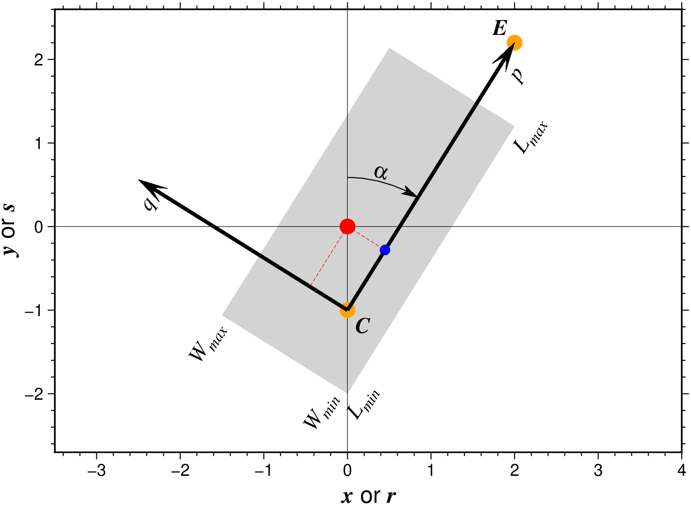

Project data onto lines or great circles, or generate tracks
Description
Reads arbitrary (\(x\), \(y\) [, z]) data and writes any combination of (\(x, y\), z, \(p, q, r, s\)), where (\(p, q\)) are the coordinates in the projection, (\(r, s\)) is the position in the (\(x, y\)) coordinate system of the point on the profile (\(q = 0\) path) closest to (\(x, y\)), and z is all remaining columns in the input (beyond the required \(x\) and \(y\) columns).
Alternatively, project may be used to generate (\(r,s,p\)) triples at equal increments dist along a profile using step. In this case, no input is read.
Projections are defined in one of three ways:
By a center (cx,cy) using origin and an azimuth in degrees clockwise from North using azim.
By a center (cx,cy) using origin and end point (bx,by) of the projection path using endpoint.
By a center (cx,cy) using origin and a rotation pole position (px,py) using pole (not allowed when a Cartesian transformation is set by flat_earth).
To spherically project data along a great circle path, an oblique coordinate system is created which has its equator along that path, and the zero meridian through (cx,cy). Then the oblique longitude (\(p\)) corresponds to the distance from (cx,cy) along the great circle, and the oblique latitude (q) corresponds to the distance perpendicular to the great circle path. When moving in the increasing (\(p\)) direction, (in the direction set by azimazimuth ), the positive (\(q\)) direction is to the left. If a pole has been specified by pole, then the positive (q) direction is toward the pole.
To specify an oblique projection, use the pole option to set the pole. Then the equator of the projection is already determined and the origin option is used to locate the \(p = 0\) meridian. The center (cx,cy) will be taken as a point through which the \(p = 0\) meridian passes. If you do not care to choose a particular point, use the South pole (cx = 0, cy = -90).
Data can be selectively windowed by using the length and width options. If width is used, the projection width is set to use only points with \(w_{min} < q < w_{max}\). If length is set, then the length is set to use only those points with \(l_{min} < p < l_{max}\). If the endpoint option has been used to define the projection, then lengthw may be selected to window the length of the projection to exactly the span from the center (origin) to to the endpoint (endpoint).
Flat Earth (Cartesian) coordinate transformations can also be made. Set flat_earth and remember that azimuth is clockwise from North (the \(y\) axis), NOT the usual cartesian theta, which is counterclockwise from the \(x\) axis. (i.e., \(azimuth = 90 - theta\)).
No assumptions are made regarding the units for \(x, y, r, s, p, q\), dist, \(l_{min}, l_{max}, w_{min}, w_{max}\). However, if km is selected, map units are assumed and \(x, y, r, s\), must be in degrees and \(p, q\), dist, \(l_{min}, l_{max}, w_{min}, w_{max}\) will be in km.
Calculations of specific great-circle and geodesic distances or for back-azimuths or azimuths are better done using mapproject as project is strictly spherical.
usingGMTa =atand(4/2.5)X =project([00], origin=(0,-1), endpoint=(2.5,3), flat_earth=true)plot([-1.5-1.0625; 0-2; 21.2; 0.52.1375], region=(-3.5,4,-2.7,2.6), fill=:lightgray, xlabel="@%7%x@%% or @%7%r@%%", ylabel="@%7%y@%% or @%7%s@%%", figsize="12/0")plot!([0-1; 22.2], marker=:circ, ms=0.3, fill=:orange, frame=(grid=10,))arrows!([0-122.2; 0-1-2.50.5625], arrow=(len="16p", stop=true, shape=1), endpoint=true, lw=2, fill=:black)plot!([00], marker=:circ, ms=0.3, fill=:red)# Get coordinates of the (0,q) point as well so we can dash the line x =-X[4] *sind(a)y = X[4] *cosd(a) -1plot!([X[5] X[6]], marker=:circ, ms=0.2, fill=:blue)T =mat2ds([ 0-10;22.20;1.91.9 a;-2.30.4 a;21.2 a;0-2 a;0-2 a;-1.5-1.0625 a;0.450.8-16], ["TL @%7%C@%%", "BR @%7%E@%%", "TC p", "RM q", "TC L@-max@-","TC L@-min@-", "RB W@-min@-", "RM W@-max@-", "TC @~a@~"])text!(T, font=(12, "Times-Italic"), angle="", justify="", offset=(away=true, shift=0.15))plot!([00; X[5] X[6]], pen=(0.25, :red, :dash))plot!([00; x y], pen=(0.25, :red, :dash))plot!([0.0-1], marker=(:matangle, [2.54 a 90], (length="9p", start=true)), ml=0.5, fill=:black)showfig()

Explanation of the coordinate system utilized by project. The input point (red circle) is given in the original x-y (or lon-lat) coordinate system and is projected to the p-q coordinate system, defined by the center (center) and either the end-point (outvars) or azimuth (\(\alpha\)), or for geographic data a rotation pole pole (not shown). The blue point has projected coordinates (p,0) and is reported as (r,s) in the original coordinate system. Options length (limit range of p) and width (limit range of q) can be used to exclude data outside the specified limits (light gray area).
Required Arguments
table
One or more data tables holding a number of data columns.
C or origin or start_point : – origin=(cx, cy)
Set the origin cx,cy of the projection when used with azim or endpoint or set the coordinates cx,cy of a point through which the oblique zero meridian (\(p = 0\)) should pass when used with pole. cx,cy is not required to be 90 degrees from the pole set by pole.
Optional Arguments
A or azim or azimuth : – azim=az
Set the azimuth of the projection. The azimuth is clockwise from North (the \(y\) axis) regardless of whether spherical or Cartesian coordinate transformation is applied.
E or endpoint or end_pt : – endpoint=(bx,by)
Set the end point bx,by of the projection path.
F or outvars : – outvars=flags
Specify the desired output using any combination of xyzpqrs in any order, where (\(p, q\)) are the coordinates in the projection, (\(r, s\)) is the position in the (\(x, y\)) coordinate system of the point on the profile (\(q = 0\) path) closest to (\(x, y\)), and z is all remaining columns in the input (beyond the required \(x\) and \(y\) columns). [Default is xyzpqrs]. If output format is ASCII then z also includes any trailing text (which is placed at the end of the record regardless of the order of z in flags). Use lower case and do not add spaces between the letters. Note: If step is selected, then the output order is set to be rsp and outvars is not allowed.
G or step or generate : – step=“dist[unit][/colat][+c][+h][+n]”
Create (r, s, p) output points every dist units of p, assuming all units are the same unless \(x, y, r, s\) are set to degrees using km. No input is read when step is used. See Units for selecting geographic distance units [km]. The following directives and modifiers are supported:
Optionally, append /colat for a small circle instead [Default is a colatitude of 90, i.e., a great circle]. Note, when using origin and endpoint to generate a circle that goes through the center and end point, the center and end point cannot be farther apart than \(2|colat|\).
Optionally, append +c when using pole to calculate the colatitude that will lead to the small circle going through the center cx/cy.
Optionally, append +h to report the position of the pole as part of the segment header when using pole [Default is no header].
Optionally, append +n to indicate a desired number of points rather than an increment. Requires origin and endpoint or |-Z| so that a length can be computed.
L or length : – length=(lmin,lmax)|length=:w
Specify length controls for the projected points. Project only those points whose p coordinate is within \(l_{min} < p < l_{max}\). If endpoint has been set, then you may alternatively use length=:w to stay within the distance from cx,cy to bx,by.
N or flat_earth : – flat_earth=true
Specify the Flat Earth case (i.e., Cartesian coordinate transformation in the plane). [Default uses spherical trigonometry.]
Q or km : – km=true
Specify that x, y, r, s are in degrees while p, q, dist, lmin, lmax, wmin, wmax are in km. If km is not set, then all these are assumed to be in the same units.
S or sort : – sort=true
Sort the output into increasing p order. Useful when projecting random data into a sequential profile.
T or pole : – pole=(px,py)
Set the position of the rotation pole of the projection as px,py.
V or verbose : – verbose=true|verbose=level
Select verbosity level. More at [verbose](../common_opts/opt_V.html)
W or width : – width=(wmin,wmax)
Specify width controls for the projected points. Project only those points whose q coordinate is within \(w_{min} < q < w_{max}\).
Z or ellipse : – ellipse=“major[unit][/minor/azimuth][+e]”
Create the coordinates of an ellipse with major and minor axes given in km (unless flat_earth is given for a Cartesian ellipse) and the azimuth of the major axis in degrees; used in conjunction with origin (sets its center) and step (sets the distance increment). Note: For the Cartesian ellipse (which requires flat_earth), we expect direction counter-clockwise from the horizontal instead of an azimuth. A geographic major may be specified in any desired unit [Default is km] by appending the unit (e.g., 3d for degrees); if so we assume the minor axis and the increment are also given in the same unit (see Units). For degenerate ellipses you can just supply a single diameter instead. The following modifiers are supported:
Append +e to adjust the increment set via step so that the ellipse has equal distance increments [Default uses the given increment and closes the ellipse].
bi or binary_in : – binary_in=??
Select native binary format for primary table input. More at
bo or binary_out : – binary_out=??
Select native binary format for table output. More at
di or nodata_in : – nodata_in=??
Substitute specific values with NaN. More at
e or pattern : – pattern=??
Only accept ASCII data records that contain the specified pattern. More at
f or colinfo : – colinfo=??
Specify the data types of input and/or output columns (time or geographical data). More at
g or gap : – gap=??
Examine the spacing between consecutive data points in order to impose breaks in the line. More at
h or header : – header=??
Specify that input and/or output file(s) have n header records. More at
i or incol or incols : – incol=col_num|incol=“opts”
Select input columns and transformations (0 is first column, t is trailing text, append word to read one word only). More at incol
o or outcol : – outcol=??
Select specific data columns for primary output, in arbitrary order. More at
q or inrows : – inrows=??
Select specific data rows to be read and/or written. More at
s or skiprows or skip_NaN : – skip_NaN=true|skip_NaN=“<cols[+a][+r]>”
Suppress output of data records whose z-value(s) equal NaN. More at
yx : – yx=true
Swap 1st and 2nd column on input and/or output. More at
Units
For map distance unit, append unit d for arc degree, m for arc minute, and s for arc second, or e for meter [Default unless stated otherwise], f for foot, k for km, M for statute mile, n for nautical mile, and u for US survey foot. By default we compute such distances using a spherical approximation with great circles (-jg) using the authalic radius (see PROJ_MEAN_RADIUS). You can use -jf to perform “Flat Earth” calculations (quicker but less accurate) or -je to perform exact geodesic calculations (slower but more accurate; see PROJ_GEODESIC for method used).
Examples
To project the remote data sets ship_03.txt (lon,lat,depth) onto a great circle specified by the two points (330,-18) and (53,21) and sort the records on the projected distances along that circle and only output the distance and the depths, try
To create a partial small circle of colatitude 80 about a pole at 40E,85N, with extent of 45 degrees to either side of the meridian defined by the great circle from the pole to a point 15E,15N, try
D =project(origin=(15,15), pole=(40,85), step=(1,80), length(-45,45))
To generate points approximately every 10 km along an ellipse centered on (30W,70N) with major axis of 1500 km with azimuth of 30 degree and a minor axis of 600 km, try
To project the shiptrack gravity, magnetics, and bathymetry in c2610.xygmb along a great circle through an origin at 30S, 30W, the great circle having an azimuth of N20W at the origin, keeping only the data from NE of the profile and within ± 500 km of the origin, run:
(Note in this example that width=(-10000,0) is used to admit any value with a large negative q coordinate. This will take those points which are on our right as we walk along the great circle path, or to the NE in this example.)
To make a Cartesian coordinate transformation of mydata.xy so that the new origin is at 5,3 and the new x axis (p) makes an angle of 20 degrees with the old x axis, use:
D =project("mydata.xy", origin=(5,3), azimuth=70, outvars=:pq)
To take data in the file pacific.lonlat and transform it into oblique coordinates using a pole from the hotspot reference frame and placing the oblique zero meridian (p = 0 line) through Tahiti, run:
D =project("pacific.lonlat", pole=(-75,68), origin=("-149:26","-17:37"), outvars=:pq)
Suppose that pacific_topo.nc is a grid file of bathymetry, and you want to make a file of flowlines in the hotspot reference frame. If you run:
G =grd2xyz("pacific_topo.nc"); D =project(pole=(-75,68), oigin=(0,-90), outvars=:xyq); Gflow =xyz2grd(region=etc, inc=etc);
then Gflow is a grid in the same area as pacific_topo.nc, but flow contains the latitudes about the pole of the projection. You now can use grdcontour on Gflow to draw lines of constant oblique latitude, which are flow lines in the hotspot frame.
If you have an arbitrarily rotation pole px,py and you would like to draw an oblique small circle on a map, you will first need to make a file with the oblique coordinates for the small circle (i.e., lon = 0-360, lat is constant), then create a file with two records: the north pole (0/90) and the origin (0/0), and find what their oblique coordinates are using your rotation pole. Now, use the projected North pole and origin coordinates as the rotation pole and center, respectively, and project your file as in the pacific example above. This gives coordinates for an oblique small circle.